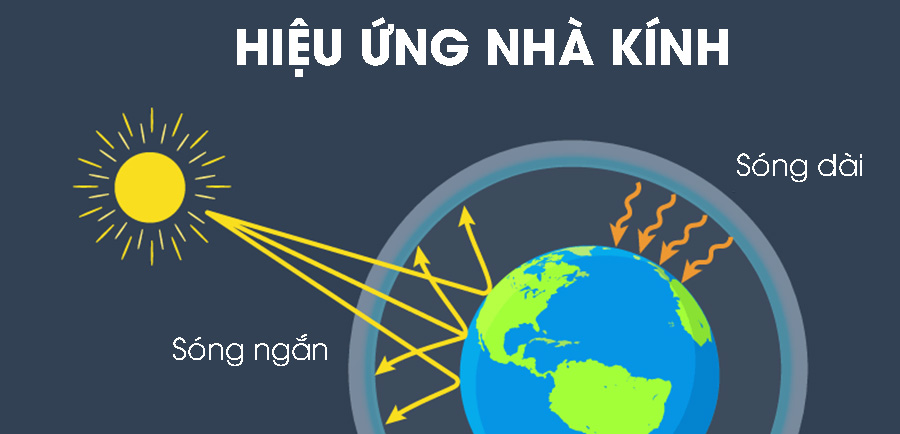
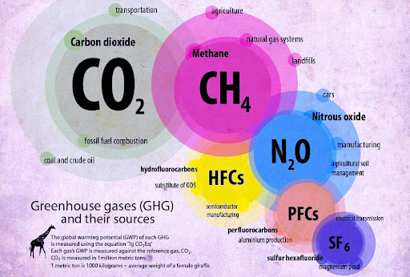
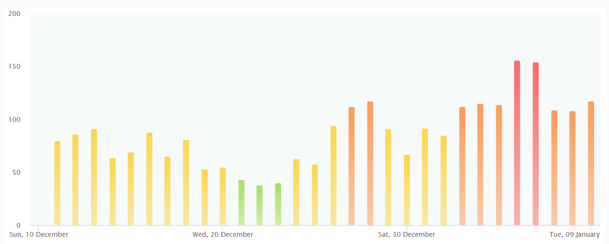

Hiệu ứng nhà kính
Khí hậu của Trái Đất hiện nay đang nóng lên. Hiện tượng này cũng giống như chúng ta đang
sống
trong một nhà kính. Trong nhà kính, ánh sáng mặt trời vẫn xuyên qua. Đó là những tia bức xạ
sóng
ngắn. Mặt đất trong nhà kính hấp thu năng lượng bức xạ mặt trời nóng lên lại bức xạ trở lại
lớp
không khí trong nhà kính. Lớp không khí này hấp thu và giữ lại nguồn năng lượng bức xạ sóng
dài,
vì thế nóng lên. Người ta gọi hiện tượng này là hiệu ứng nhà kính.


Khí nhà kính
Qua những quan trắc và đo đạc trong vòng hơn 200 năm gần đây, người ta nhận thấy nhiệt độ
trung bình của Trái Đất tăng lên có liên quan chặt chẽ với sự gia tăng nồng độ của các chất
khí như CO2, CH4, CFC, SO2, N2O và một số chất
khí khác. Các chất khí này có đặc
tính hấp thu rất mạnh nguồn năng lượng bức xạ sóng dài làm cho các lớp không khí ở sát mặt
đất nóng lên giống như khả năng giữ nhiệt trong nhà kính. Vì thế các chất khí này được gọi
là khí nhà kính. Sự tăng nồng độ của khí nhà kính sẽ dẫn đến sự tăng hiệu ứng nhà kính của
khí quyển và dẫn
đến kết quả là nhiệt độ trung bình của Trái Đất tăng lên.
Trong lịch sử phát triển của xã hội loài người, đặc biệt khi bước sang thời kỳ công nghiệp,
chính con người thông qua các hoạt động sản xuất của mình đã sử dụng nhiên liệu hoá thạch để
sản xuất năng lượng, hoạt động công nghiệp, giao thông vận tải, sản xuất nông nghiệp, đốt
phá rừng... tạo ra lượng phát thải khí nhà kính ngày một lớn, khó kiểm soát. Tại Việt Nam,
việc phát thải khí nhà kính đã trở thành một vấn đề nhức nhối, đặc biệt là ở các đô thị lớn.
Chỉ số chất lượng không khí tại một số đô thị lớn của Việt
Nam

Thành phố Hồ Chí Minh
Các biểu đồ trên đã chỉ ra được vấn đề đáng báo động về chất lượng không khí ở Việt Nam, nhất là ở các đô thị lớn. Như tại thành phố Hà Nội và Hồ Chí Minh, chỉ số chất lượng không khí AQI đa phần đều ở từ mức trung bình (màu vàng) đến xấu (màu đỏ). Những hoạt động giao thông, sản xuất đều đã thải ra một lượng lớn khói bụi độc hại như CO, SO2, bụi PM 2.5 và nguy hiểm hơn là một lượng lớn khí CO2 được đưa vào khí quyển.